Fortress Zero
A roguelite shooter where the thing you defend can't move.
Concept
What if the thing you're protecting can't move? One stationary Siege Cannon anchors every decision in a run, so where you stand becomes the whole strategy. The player is constantly torn between manning the cannon and leaving it to collect, deploy and reposition, while alien and robot factions pressure the player and the cannon in different ways.
My role
I designed the core loop, the Siege Cannon, the energy economy, the enemy roles and the first-time experience, and documented them in a 19-section GDD. The design is playable as a Godot 4 build.
Prototype screens
Captured from the Godot web build, which is playable on itch.io.
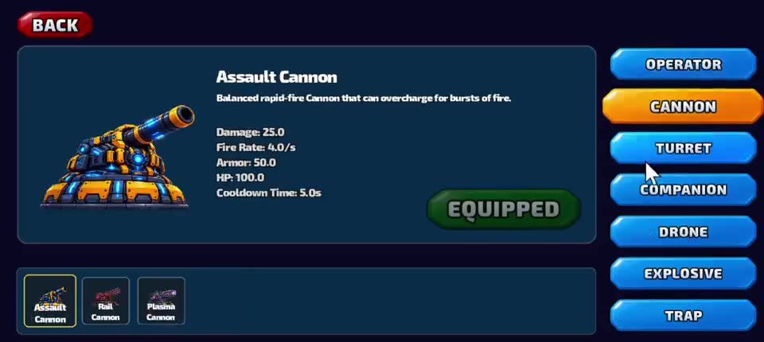
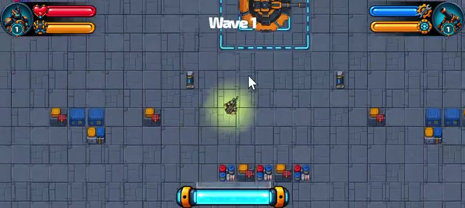
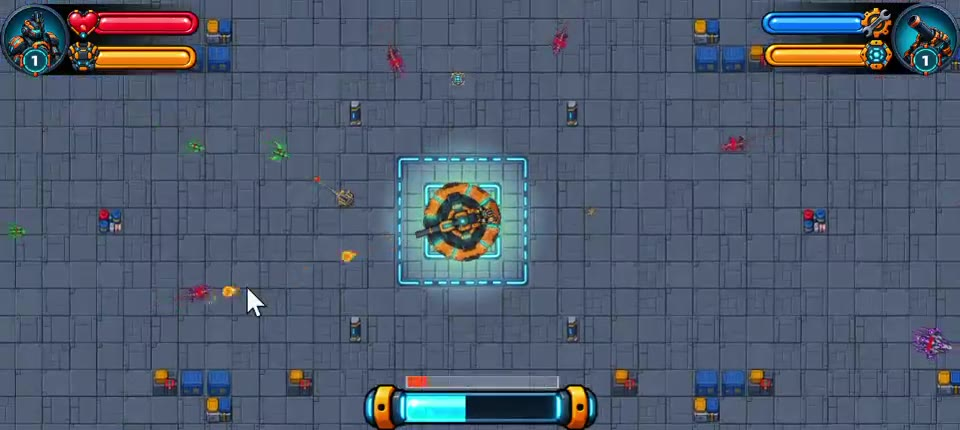
Where I put the tension
The design question: how do you make a player feel torn between two jobs instead of simply doing both?
- 01
Make the cannon a place, not a button
DecisionThe cannon is stationary and has to be walked to. An unmanned cannon slowly loses health.
WhyWalking time is the cost. Every trip away leaves the cannon exposed, so where to stand is always a decision.
- 02
Make energy a gamble
DecisionDrops are random and never guaranteed, and energy stays inside the run. Spending it on a trap means it cannot go into an upgrade.
WhyUncertain drops turn every trip to collect into a risk, and every spend into a trade-off.
- 03
Give each faction a different ask
DecisionAliens go for the player, robots go for the cannon, and each enemy has a counter: knockback, traps, mines.
WhyDifferent pressure forces different answers, so no single tactic solves every wave.
- 04
Write the failure condition early
DecisionIf playtesters default to one or two of the six actions, the loop is not working.
WhyIt gave me something to measure in playtests instead of something to argue about.
- 05
Teach by doing
DecisionThe tutorial advances on real actions and highlights the exact buttons on touch.
WhyA player who has done every step has already seen the whole loop.
Six actions that compete for the player's time
- AttackShoot enemies directly as the operator.
- OperateMount the cannon for heavy firepower.
- CollectLeave the cannon to grab energy and health.
- DeploySpend energy on turrets, traps, mines and drones.
- RepositionMove for coverage or safety as waves close in.
- PrepareUpgrade, heal and repair between encounters.
Design test: if playtesters default to one or two of these actions, the loop is not working.
One system everything orbits
Mount any time
Mount or dismount with no cooldown, so the choice is about position and risk, not waiting.
Pressure when unmanned
After a short grace period an unmanned cannon slowly loses health, and enemies can target it. At zero the run ends.
Three types, five tiers
Assault, Rail and Plasma, each with its own tier 4 special, so the player builds a different kind of defense each run.
Two factions, two kinds of pressure
Aliens swarm the player. Robots lean on the cannon. Each one asks for a different answer.
Walker
Melee rusher that hits harder when you stand still. Weak to knockback.
Venowat
Ranged poison that arcs over cover. Weak to crowd-control traps.
Assault Drone
Hovers and goes for the cannon first, so attention has to split.
Spider Bot
Armored, so non-explosive fire does 30% less. Rewards mines.
Teaching the loop in eight steps
Each step advances when the player actually does it, not on a timer. On touch, the exact buttons are highlighted and an arrow points the way.
- Reach the cannon
- Mount it
- Shoot an enemy
- Collect the drop
- Deploy a utility
- Pick an upgrade
- Defend one wave
- Reach the end zone
Problems found, problems fixed
Enemies got stuck
Diagonal obstacle corners trapped chasers. They now bump, step back and sidestep, with grid pathfinding as a fallback.
Slow web load
The itch.io build was too heavy to start smoothly. Downscaled sprites, re-encoded audio and trimmed assets cut it from 61 MB to about 22 MB.
Cropped on phones
A device-fit layer scales every screen to landscape phones and asks portrait players to rotate.
Design documentation
Core loop, gameflow and touch wireframes drawn for this page, followed by excerpts from the GDD.
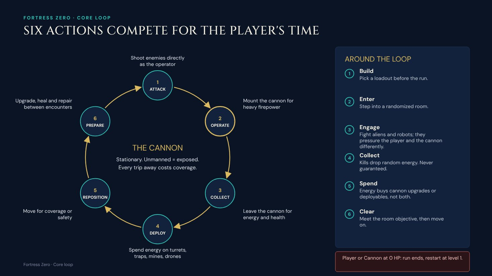
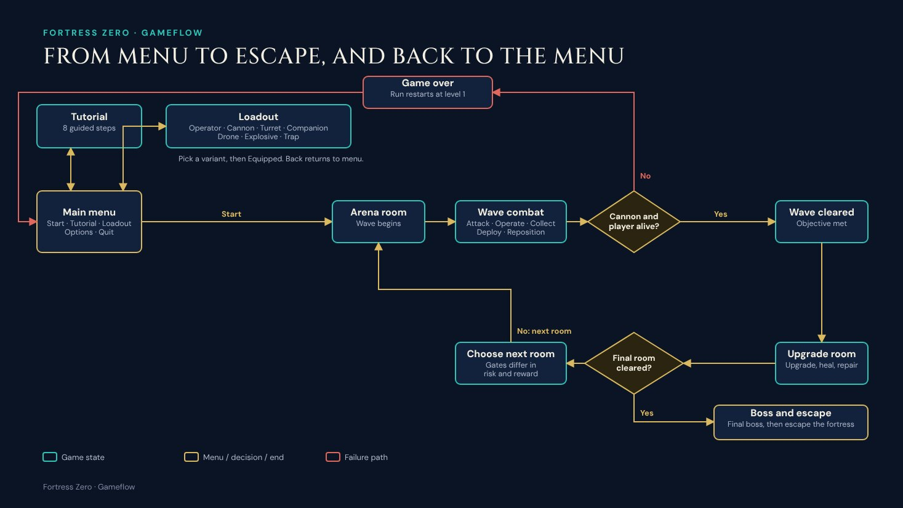
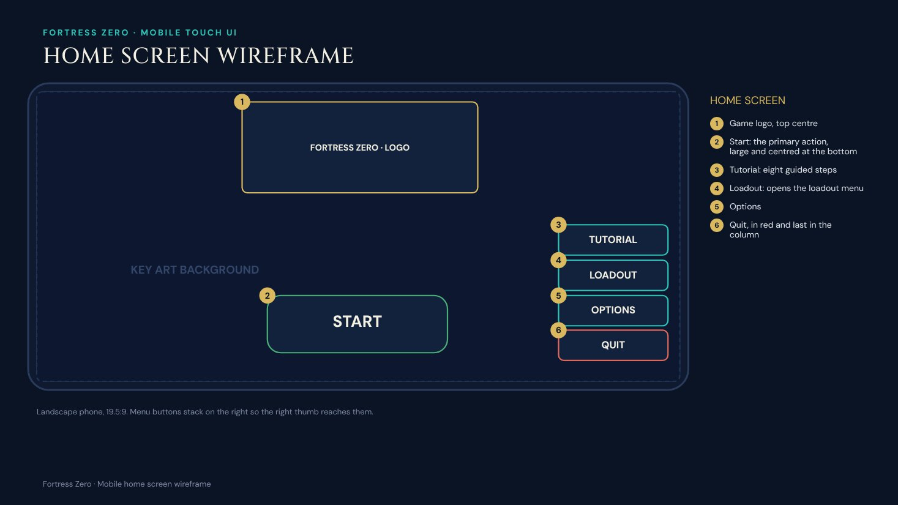
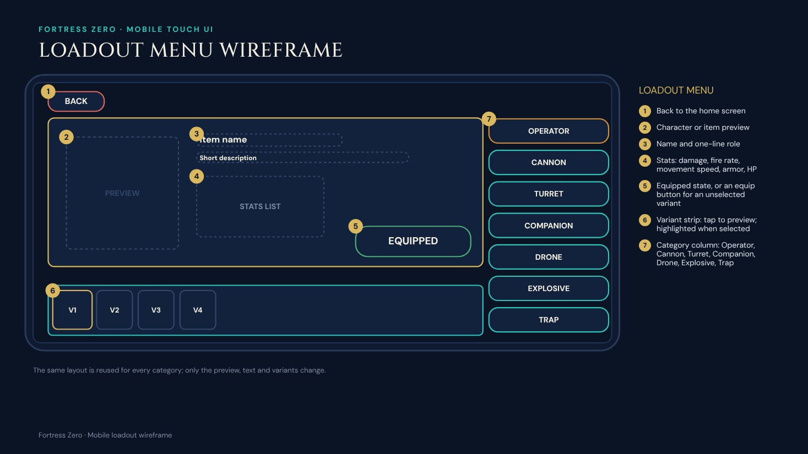
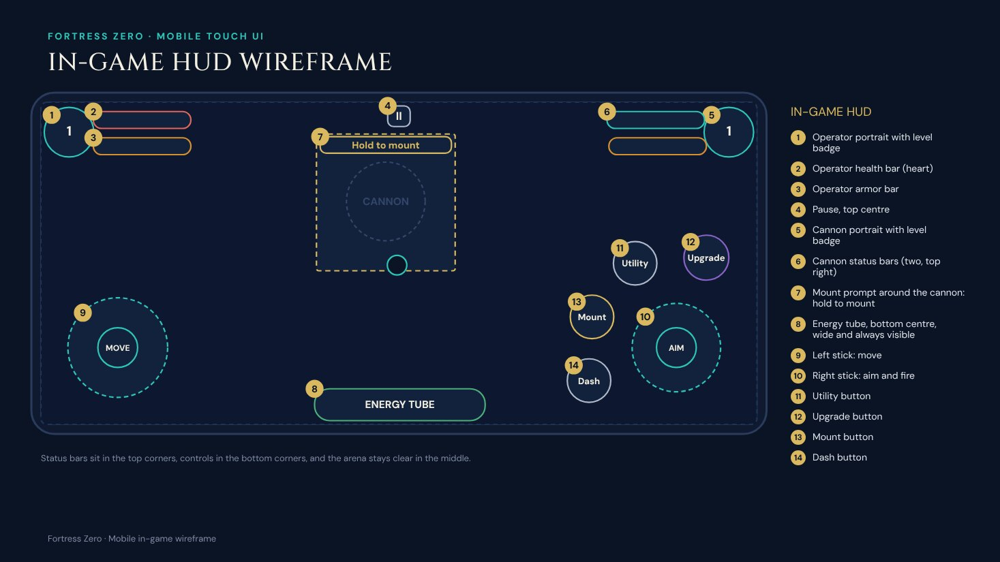
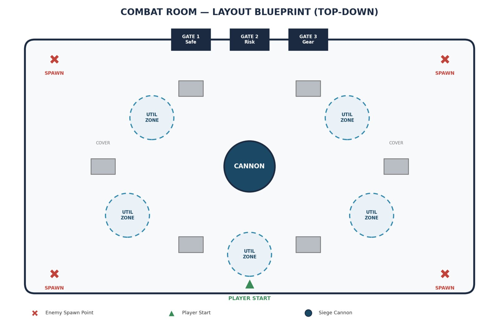
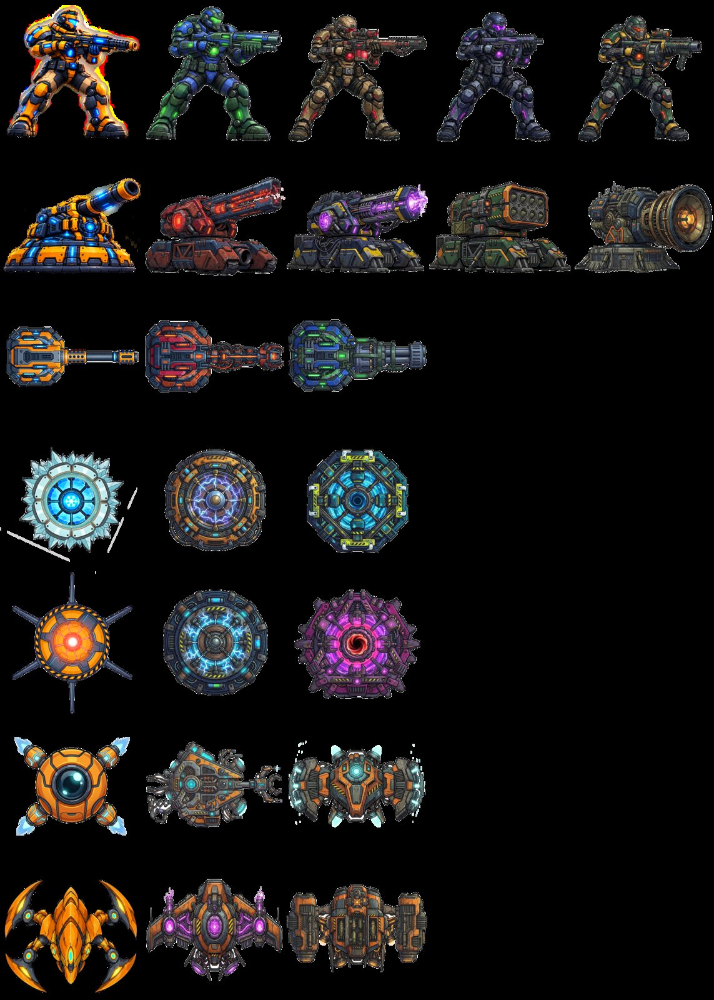
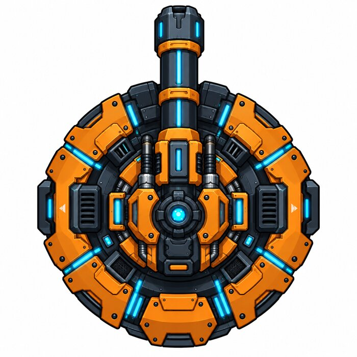
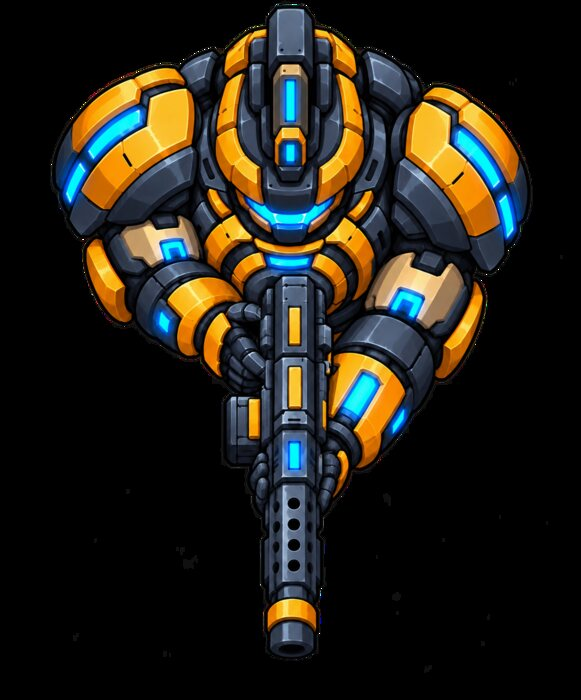